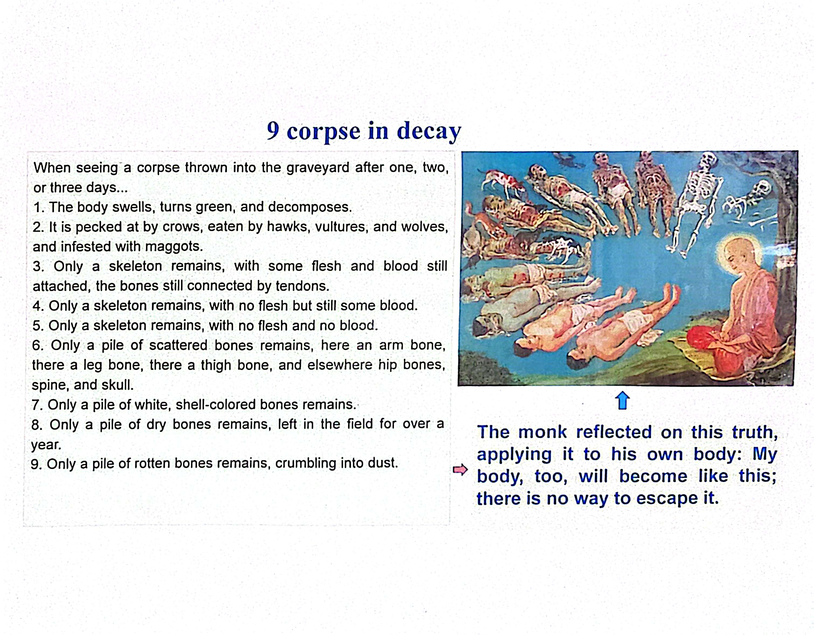

Purpose
Contemplating death helps us reduce our attachment to life and fear of death. By clearly seeing the impermanent nature of life in the present moment, we can find peace and serenity. This practice ensures we no longer have illusions about "eternal life," which the Buddha called the view of permanence.
A Lesson on Reality, Not Morbidity
This teaching is not meant to be morbid or disgusting. It is a neutral observation of a biological reality. Historically, monks practiced this in graveyards where bodies were left in the open. While our culture and laws have changed, the fundamental truth remains: every birth eventually leads to death.
The Nine Stages of Decay
The traditional stages as described in the handouts:
- The body swells, turns green, and decomposes.
- It is pecked at by crows, eaten by scavengers, and infested with maggots.
- Only a skeleton remains with some flesh and blood attached.
- Only a skeleton remains with no flesh but still some blood.
- Only a skeleton remains with no flesh and no blood.
- Only a pile of scattered bones remains (limbs, spine, skull).
- Only a pile of white, shell-colored bones remains.
- Only a pile of dry bones remains after a year.
- Only a pile of rotten bones remains, crumbling into dust.

Practical Teaching: No Imagination
It is crucial in this practice not to imagine things. Imagining a body going through transitions is not the "real thing." Instead, we observe the changes in our current, lively body.
Look at the changes occurring right now: the growth of hair, the aging of skin, or the healing of a wound. These are real-time expressions of the body's changing nature.
Put it into practice: The Living Mirror
- Avoid visualization; stay grounded in the physical reality of your body.
- Observe the subtle, constant movements of life and aging within you.
- Accept that death is a natural part of the cycle of life.
- Reflect on the truth: "This body is of such a nature, it will become like that, it is not exempt from that fate".